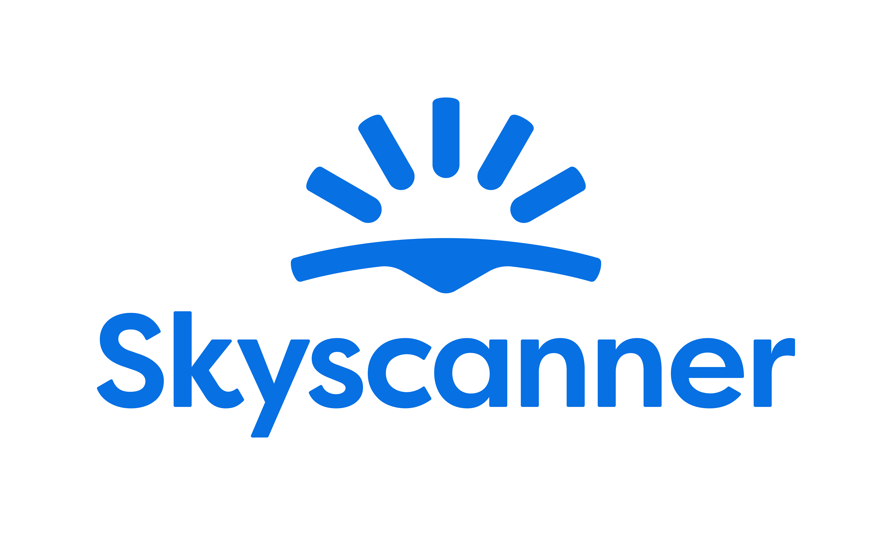
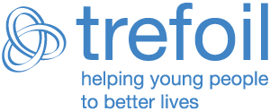

Test & Understand services
Discover how digital experiences work for real people.
Inclusive research with disabled and neurodivergent participants, manual testing, assistive technology evaluation and detailed journey research.
We combine expert manual accessibility testing with inclusive user research and disabled-user testing involving disabled and neurodivergent people.
People in our Disabled Test Panel use their everyday assistive technologies, including screen readers, keyboard-only navigation, Voice Control and magnification. We uncover real-world barriers and turn evidence into practical improvements for digital teams.
Talk to us about your projectNot one-size-fits-all accessibility. We shape evaluation and recommendations around your products, people and priorities.
From focused assessments to complex programmes, we work alongside digital teams to understand barriers, prioritise remediation and help improvements stick.
We work across digital sectors, with specialist experience in travel search, airline and online travel agency (OTA) booking journeys.
Discover how digital experiences work for real people.
Inclusive research with disabled and neurodivergent participants, manual testing, assistive technology evaluation and detailed journey research.
Turn accessibility evidence into better digital products.
WCAG 2.2 AA audits, prioritised remediation, inclusive design and ongoing specialist support for product and engineering teams.
Focused expertise for complex challenges and emerging technologies.
Supplier evaluation, accessibility benchmarking and training, live demonstrations and human-verified testing of AI-powered experiences.
Watch Adi Latif, a blind screen reader user, use iPhone VoiceOver to plan a journey to the Tower of London. The demonstration shows how unclear labels, signposting and interactions can affect independent access.
Watch the screen reader demonstrationStart with what you’re trying to achieve. We’ll help you find the right service.
Tell us what you’re working on. We can help identify the right approach, from a focused assessment or inclusive research to ongoing specialist support.

